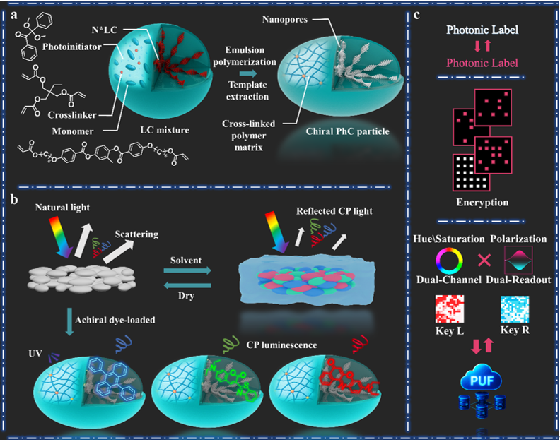
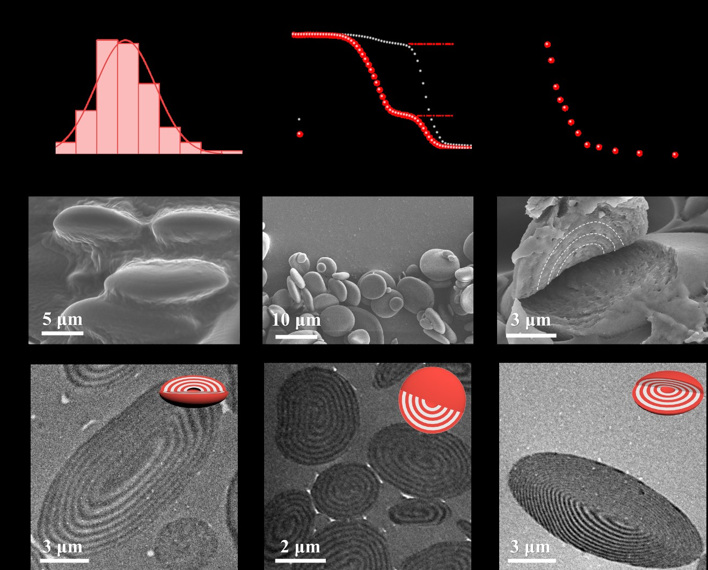
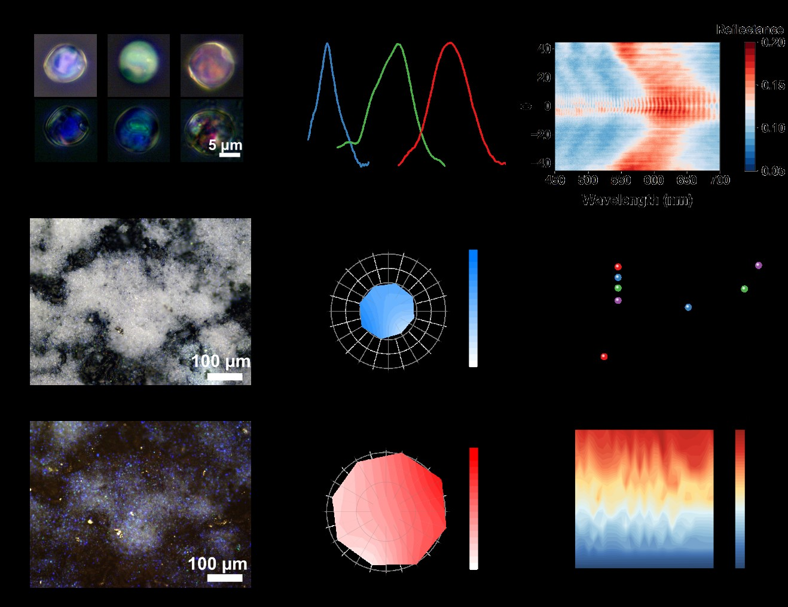
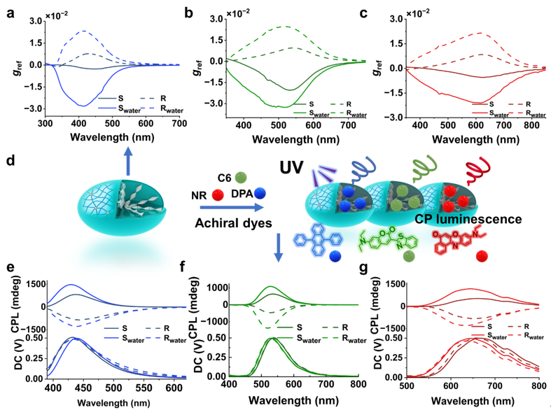
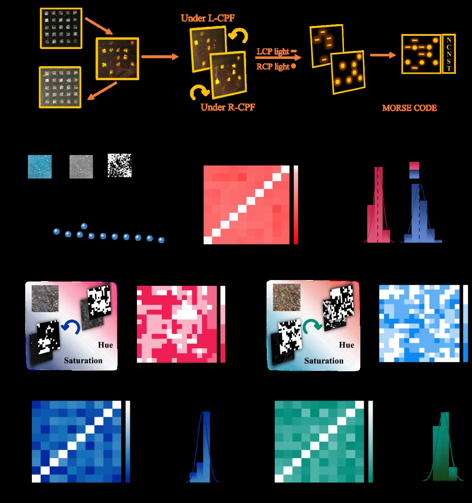

在光学材料领域，圆偏振光及其相关现象因在信息加密、防伪溯源和量子通信中的独特优势，近年来受到广泛关注。传统的圆偏振光响应体系往往依赖于液晶分子的取向变化或复杂的有机框架构筑来实现“开→关”调控。然而，这类方法在结构稳定性、环境适应性以及大规模制备方面都存在一定局限。
本文提出了一条新颖的思路：通过“散射调制”来实现圆偏振信号的隐显切换。我们团队合成了具有内部纳孔的扁平手性光子晶体微粒，干燥时由于强烈的散射，结构色与圆偏振信号被“掩盖”，表现为“关”态。当溶剂进入粒子内部、折射率得到匹配后，散射衰减，结构色与圆偏振特征“显现”出来，即“开”态。这种“关→开”的模式不仅提供了一种稳定、可逆、工艺友好的圆偏振调控机制，还被进一步用于多层级光学加密和物理不可克隆函数（PUF）的构建（图1）。
图1. 手性光子晶体微粒的制备流程及其工作原理示意，具备光子标签、信息加密和物理不可克隆函数等应用潜力。
我们利用油-水乳液聚合的方法，合成了扁平椭球状的手性光子晶体微粒。这些粒子直径约为 10 微米，内部呈现出同心排列的层状结构，并伴随纳米尺度的孔道。这种独特的形貌既保证了光子晶体的有序性，又为后续的溶剂渗透和染料负载提供了通道（图2）。
图2. 手性光子晶体微粒的结构以及形貌特征。
光学测试进一步揭示了这种结构的独特性。在显微镜下，我们可以看到但分散的微球反射带来的结构色，然而，在干燥状态下，强烈的散射使聚集样品看起来像一团白色粉末，几乎无法分辨出结构色。而当水或其他溶剂浸润时，折射率差被有效降低，散射随之衰减，鲜明的结构色重新显现，圆偏振反射也被大幅放大。理论计算同样印证了这一点：折射率比的下降会显著减小散射系数，从而解释了这种“隐身”与“显影”的切换（图3）。
图3. 手性光子晶体微粒的光学性能。
此外，我们还在微粒内部引入了不同发光染料。随着染料分子进入纳孔结构，它们不仅避免了常见的聚集猝灭问题，还与手性光子晶体的有序骨架相互耦合，最终在蓝、绿、红不同波段都实现了圆偏振发光。体系兼具了反射与发光的双重功能（图4）。
图4. 微粒在不同光子带隙下的圆偏振光学响应，并通过引入染料实现圆偏振发光。
本研究提出了一种全新的圆偏振光学调控策略：通过溶剂引发的折射率匹配来削弱散射，从而实现手性光子晶体微粒的“关–开”切换。该体系不仅能够在反射态展现显著的圆偏振增强，还能通过染料负载产生强烈的圆偏振发光。进一步的演示表明，这些微粒可用于多层级信息加密和物理不可克隆函数，兼具安全性、稳定性和可扩展性。这一成果为发展新型光学防伪标签和高安全认证材料提供了新的思路（图5）。
图5. 基于手性光子晶体微粒实现三层加密和物理不可克隆函数编码。
转载文章请注明出处：国家纳米科学中心段鹏飞老师课题组 https://duanpengfei-chirality.com/